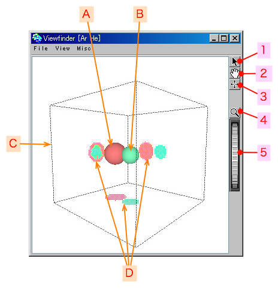

2007年01月25日
希ガス２分子間の相互作用 - ビューファインダ
もくじ：
ここでは、希ガス２分子間の相互作用と連動するビューファインダを解説します。
SPIDAR-G で操作しているグリップの位置を３次元で表示します。
影も表示されるので、グリップとターゲットの位置関係を確認するときに便利です。
SPIDAR-G と接続していないときは、マウスでグリップの位置を移動できます。
ビューファインダを開くには、「 希ガス２分子間の相互作用 - チャート 」で 「Window」->「Viewfinder」メニューを選択します。
画面説明
ビューファインダの画面は以下のようになっています。

- 1 : ピックボタン
- 2 : グラブボタン
- 3 : ドラッグボタン
- 4 : フォーカスボタン
- 5 : Ｚホィール
- A : ターゲット
- B : グリップ
- C : 境界箱
- D : 影
ウィンドウの上部にあるメニューです。
ビューアに表示されている状態の画像ファイルを作成します。
デフォルトのファイル名は、[年月日時分秒].jpgです。
保存される画像のサンプル
ウィンドウを閉じます。
ターゲットの表示／非表示の設定をします。
分子間力を計算する相手の原子です。
グリップの表示／非表示の設定をします。
グリップは、自分が操作して、位置を移動することのできるオブジェクトです。
ここでは、分子間力を計算する原子になります。
境界箱の表示／非表示の設定をします。
SPIDAR-G でグリップを動かすことのできる範囲です。
影の表示／非表示の設定をします。
ターゲットとグリップの位置が、境界箱の面上に影として表示されます。
軸の表示／非表示の設定をします。
X軸, Y軸, Z軸の方向が分かります。
フレームの表示／非表示の設定をします。
SPIDAR-G のフレームがどのあたりにあるのかが分かります。
糸の表示／非表示の設定をします。
SPIDAR-G の糸がどのあたりにあるのかが分かります。
ビューア内に表示しているものの全体が見られます。
このメニューは、ランタイム版では選択することができません。
開発時にプログラムの状態などを確認するためのメニューです。
選択可能な場合は、インスペクタが開きます。

{kind=link}
{kind=link}
{kind=link}
{kind=link}
{kind=link}
{kind=link}
{kind=link}
{kind=link}
{kind=link}
{kind=link}